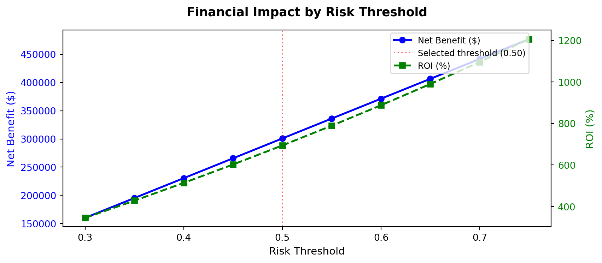

A Voting Classifier achieving 86.1% precision on 61,022 CFPB complaints, deployed as a live Streamlit dashboard with projected net savings of $470,500 and an ROI of 1,191%.
Author
Ruairí Cullen
Published
December 1, 2024
Overview
This project transforms Bank of America’s complaint management from a slow reactive First-In-First-Out system into an AI-powered fast-track routing system. Using 61,022 real complaints from the Consumer Financial Protection Bureau (CFPB), a Voting Classifier combining Histogram-based Gradient Boosting and Random Forest achieves 86.1% precision identifying complaints likely to require monetary relief.
Voting Classifier performance metrics on the CFPB test set
Python Code — Financial Simulation
import numpy as npimport matplotlib.pyplot as plt# Simulation parameters (from report)COST_PER_REVIEW =50AVG_PAYOUT_SAVED =750flagged_cases =1020thresholds = np.arange(0.3, 0.8, 0.05)gross_savings = [flagged_cases * AVG_PAYOUT_SAVED * (t *0.9) for t in thresholds]op_costs = [flagged_cases * COST_PER_REVIEW * (1- t *0.3) for t in thresholds]net_benefit = [g - o for g, o inzip(gross_savings, op_costs)]roi = [(n / o) *100for n, o inzip(net_benefit, op_costs)]fig, ax1 = plt.subplots(figsize=(9, 4))ax2 = ax1.twinx()ax1.plot(thresholds, net_benefit, 'b-o', linewidth=2, label='Net Benefit ($)')ax1.set_xlabel('Risk Threshold', fontsize=11)ax1.set_ylabel('Net Benefit ($)', color='blue', fontsize=11)ax1.tick_params(axis='y', labelcolor='blue')ax2.plot(thresholds, roi, 'g--s', linewidth=2, label='ROI (%)')ax2.set_ylabel('ROI (%)', color='green', fontsize=11)ax2.tick_params(axis='y', labelcolor='green')ax1.axvline(x=0.5, color='red', linestyle=':', alpha=0.6, label='Selected threshold (0.50)')ax1.set_title('Financial Impact by Risk Threshold', fontsize=13, fontweight='bold', pad=15)fig.legend(loc='upper right', bbox_to_anchor=(0.88, 0.88), fontsize=9)plt.tight_layout()plt.show()

Net benefit and ROI across different risk thresholds
Dashboard Features
The deployed Streamlit application serves three user groups:
User
View
Purpose
Frontline Agents
Live Risk Assessment
Real-time monetary liability score per complaint
Managers
Operational Efficiency
Processing times and workload heatmaps
Executives
Market Intelligence
Volume patterns, financial exposure, ROI tracking
Ethical Considerations
All Personally Identifiable Information (PII) was removed prior to analysis. Sensitive demographic variables — race, gender, and exact location — were excluded to ensure fair, bias-free predictions based solely on complaint content and product metadata.
Skills Used
Pythonscikit-learnGradient BoostingRandom ForestTF-IDFNLPStreamlitPrescriptive AnalyticsEthical AICFPB Data
References
Chen & Guestrin (2016). XGBoost: A Scalable Tree Boosting System. ACM SIGKDD.